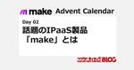

CloudNative Inc. BLOGs
https://blog.cloudnative.co.jp
株式会社クラウドネイティブのブログ。情報システムに関するマニアックな記事から、ちょっと変わった？社風までざっくばらんにご紹介。
フィード

make 基本操作編 機能紹介：Webhooks
CloudNative Inc. BLOGs
この記事は「make Advent Calendar 2024」6日目の記事です。 このアドベントカレンダーについて このアドベントカレンダーは25日間でIPaaS製品の「make」について使い方や、実践を学べる連続ブロ […]
3日前

make 基本操作編 機能紹介：Connections
CloudNative Inc. BLOGs
この記事は「make Advent Calendar 2024」5日目の記事です。 このアドベントカレンダーについて このアドベントカレンダーは25日間でIPaaS製品の「make」について使い方や、実践を学べる連続ブロ […]
3日前

make 基本操作編 機能紹介：Scenario、Template
CloudNative Inc. BLOGs
この記事は「make Advent Calendar 2024」4日目の記事です。 このアドベントカレンダーについて このアドベントカレンダーは25日間でIPaaS製品の「make」について使い方や、実践を学べる連続ブロ […]
4日前
make 基本操作編 機能紹介：Organization
CloudNative Inc. BLOGs
この記事は「make Advent Calendar 2024」3日目の記事です。 このアドベントカレンダーについて このアドベントカレンダーは25日間でIPaaS製品の「make」について使い方や、実践を学べる連続ブロ […]
5日前
makeで作ってみたScenario紹介
CloudNative Inc. BLOGs
この記事は「make Advent Calendar 2024」2日目の記事です。 このアドベントカレンダーについて このアドベントカレンダーは25日間でIPaaS製品の「make」について使い方や、実践を学べる連続ブロ […]
6日前

話題のIPaaS製品「make」とは 2
2
CloudNative Inc. BLOGs
この記事は「make Advent Calendar 2024」1日目の記事です。 このアドベントカレンダーについて このアドベントカレンダーは25日間でIPaaS製品の「make」について使い方や、実践を学べる連続ブロ […]
6日前

クラウドネイティブに入社しました
CloudNative Inc. BLOGs
はじめに はじめまして！suzukaです。今回は入社して約３カ月が経ちましたので、自己紹介も兼ねて入社ブログを書かせていただきます。私のブログはゆるい内容になりますが、ご了承ください☺︎ 自己紹介 好きなものは、愛犬(ポ […]
10日前
Microsoftのライセンス付与をシステマティックにやる
CloudNative Inc. BLOGs
Microsoftのライセンス付与どうやってますか？ 迷える情シスの皆さんこんにちは、「おかしん（okash1n）」こと岡村 慎太郎です。 最近全然違う方面から似たような質問をされたので、書いてみたいと思います。Micr […]
1ヶ月前
おかしんがクラウドネイティブにログインしました
CloudNative Inc. BLOGs
悩める情シスの皆さんこんにちは、「おかしん（okash1n）」こと岡村 慎太郎です。2024年11月1日付でクラウドネイティブに入社しました。カバーは今年2月頃に登壇したデブサミの写真です。 何やってる人？ 色々やりすぎ […]
1ヶ月前
Gemini for Workspaceのアルファ版を触ってみた
CloudNative Inc. BLOGs
2024/10/16 時点情報を元にした記事です。 どーもbarusuです。 Microsoft Copilotがちょっと前に話題になりましたね。でもGoogleWorkspaceをメイン使いしている会社だとなかなか使え […]
2ヶ月前